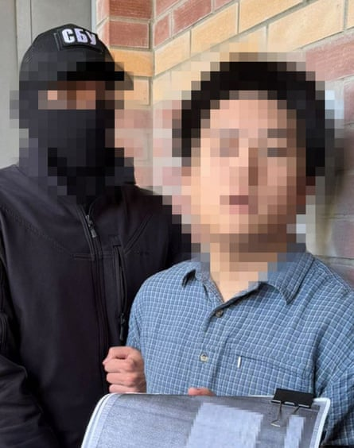

Ukraine says it has arrested a Chinese father and son on suspicion of spying on its Neptune anti-ship missile programme, a key part of Kyiv’s growing domestic arms industry that is critical to its defence against Russian forces.
The announcement by Ukraine’s security service (SBU) follows assertions by Kyiv in recent months that Beijing, which has sought to project an image of neutrality, is helping the Kremlin’s war effort.
Counterintelligence officials arrested a 24-year-old former student in Kyiv after they provided him with “technical documentation” related to Neptune production, the SBU said in a statement on Wednesday.
A pixillated image of the younger Chinese national detained in Kyiv.Photograph: Ukrainian Security Service/AFP/Getty Images
They later detained his father, who had aimed to smuggle out the documents to the Chinese special services, the agency said. The father had been living in China but visited Ukraine to “personally coordinate” his son’s work, it added.
A Ukrainian official told Reuters the two men were the first Chinese people arrested for spying since Russia’s full-scale invasion in 2022.
China’s foreign ministry on Thursday said it was “still verifying the relevant information”.
“If Chinese citizens are involved, we will safeguard their legitimate rights and interests in accordance with the law,” a ministry spokesperson, Mao Ning, told a regular press conference when asked about the arrests.
A lawyer for the men could not immediately be reached.
Ukraine’s president, Volodymyr Zelenskyy, has accused China of supplying weapons and gunpowder to Russia, and has imposed sanctions against Chinese firms Kyiv believes are aiding Moscow’s war machine, including by providing components for drones.
He has also said Ukrainian forces have captured Chinese nationals fighting for Russia on the battlefield.
Though Beijing is an ally of Moscow, it has aimed to cast itself as a peacemaker in the war and says it has not armed either party. In May, China’s president, Xi Jinping, travelled to Moscow for a pomp-filled visit that included talks with his Russian counterpart, Vladimir Putin.
Ukraine’s Neptune missile was used to destroy the flagship of Russia’s Black Sea fleet in the first months of the war. It has since been fired at other targets including Russian oil terminals.
Kyiv is strengthening its domestic defence sector amid mixed signals on future support from the US, its top military backer, and as Europe struggles to ramp up its own production.